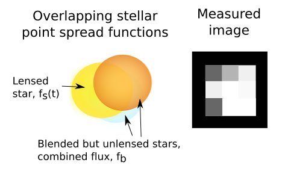

Blending
Real-world affects of crowding on microlensing analysis
Photometry in crowded fields
So far we have assumed that the image of the lensed source in our CCD frames is always isolated and the flux from it can always be measured independently from all neighboring stars. But we've also learned that microlensing is most often detected in crowded starfields.

|
The field of OGLE-2012-BLG-0406 (centered) imaged by one of LCO's 2m telescopes,
showing the high density of stars typical in microlensing observations. Y.Tsapras |
Blended Point Spread Functions
he light from each star is spread over a circle of pixels due to diffraction at the telescope aperture. This shape of this circle is described by the star's Point Spread Function (PSF), which will have a certain Full Width Half Maximum (FWHM) depending on the telescope and seeing conditions at the time.
If the PSFs of neighboring stars overlap, they are said to be blended.
|  | The light from multiple distinct stars is often blended together in our images, but only the flux from one of them exhibits a lensing lightcurve when measured as a function of time R.A. Street |
Measured Point Spread Functions
The instrument detects the light via an array of pixels, each of which subtends an angle on sky (the pixel scale) which is specific to that camera and telescope.